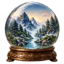
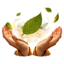
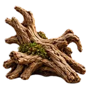

Gérer ses émotions : ce que MeditaDream change
La colère qui explose pour un détail. La tristesse qui arrive sans prévenir. La gestion des émotions, adulte comme enfant, ne s’apprend pas dans un livre : elle se pratique. MeditaDream t’y entraîne avec des séances concrètes. « Accueillir une émotion difficile » (17 min) t’apprend à regarder une émotion avec curiosité, et à voir qu’elle n’est jamais tout à fait fixe.
Va plus loin quand tu es prêt. « Sérénité de l’Enfant Intérieur » (19 min) t’aide à renouer avec ton enfant intérieur, par le jeu et la sécurité. « Travail de l’Ombre » (17 min) t’aide à comprendre ce qu’une réaction cherche à protéger. Gérer sa tristesse demande aussi de la douceur : « Développer l’amour de soi » ou « Gratitude quotidienne » remettent un peu de lumière.
Comment calmer sa colère, ou ce sentiment de solitude ? Écris à l’Oracle « je suis en colère » ou « je me sens seul » : il te propose trois méditations pour ce moment. Le Journal Émotionnel t’aide ensuite à noter ce que tu ressens, pourquoi, et comment avancer avec. Tout reste sur ton téléphone, sans compte, et l’application est gratuite, sans publicité.
Ton programme
Méditer chaque jour pendant 4 semaines pour gérer ses émotions
Une émotion t’emporte parfois avant que tu la voies venir ? Ce programme te propose de méditer chaque jour pendant quatre semaines, de 3 à 20 minutes. Tu commences par des pauses courtes, à chaud. Puis tu apprends à accueillir une émotion, à cultiver la gratitude et à rencontrer ton enfant intérieur. Chaque jour, un petit pas dans la gestion des émotions.
- 4 semaines
- 3 à 20 min par jour
- 4 étapes
- 9 séances
Semaine 1
Reprendre ton souffle à chaud
Cette semaine, tu t’entraînes sur les petits moments. Après un accrochage, « Se calmer après une dispute » (3 min) t’aide à revenir à ce qui t’entoure avant de répondre. Les jours plus gris, « Le souvenir heureux en trois sens » (4 min) réchauffe le présent avec un bon souvenir. Puis tu mets un mot sur ce que tu as ressenti.

Se calmer après une dispute3 min · débutant- Le souvenir heureux en trois sens4 min · débutant
 Alarme et rappels
Alarme et rappels
Ton gesteProgramme un rappel le soir. Quand il sonne, donne un seul mot à l’émotion la plus forte de ta journée, sans la juger.
Ton repèreQuand tu sais nommer ce que tu ressens sur le moment, et pas seulement le soir, passe à la semaine 2.
Semaine 2
Accueillir une émotion au lieu de lutter
Cette semaine, tu changes de réflexe : regarder l’émotion plutôt que la chasser. « Accueillir une émotion difficile » (17 min) t’apprend à l’observer comme un scientifique bienveillant, et à voir qu’elle bouge et se transforme. Les jours où tu as peu de temps, « Méditation de compassion » (7 min) t’offre une pause de bienveillance, pour toi et pour les autres.

Accueillir une émotion difficile17 min · intermédiaire- Méditation de compassion7 min · intermédiaire
Ton gesteQuand une émotion te submerge, décris-la à l’Oracle, puis offre-toi la séance qui t’aide à l’accueillir.
Ton repèreQuand une émotion forte passe un peu plus vite, parce que tu ne la combats plus, tu peux avancer.
Semaine 3
Cultiver la gratitude et la douceur envers toi
Place à ce qui nourrit. « Gratitude quotidienne » (14 min) t’apprend une gratitude concrète, qui commence dans le corps. « Développer l’amour de soi » (15 min) cherche en toi une force que tu peux prouver, puis lui accorde un peu d’amour. « Se libérer de la comparaison » (13 min) t’aide à voir que ce que tu envies n’est pas étranger à ta vie.
- Gratitude quotidienne14 min · intermédiaire
 Développer l’amour de soi15 min · intermédiaire
Développer l’amour de soi15 min · intermédiaire Se libérer de la comparaison13 min · intermédiaire
Se libérer de la comparaison13 min · intermédiaire
Ton gesteChaque soir, tiens ton journal de gratitude : trois choses précises dans « Mes trois gratitudes du jour », du journal Gratitude & Croissance.
Ton repèreQuand trouver trois gratitudes te prend moins d’une minute, et que tu te parles avec plus de douceur, continue.
Semaine 4
Rencontrer ton enfant intérieur et ton ombre
Pour finir, va plus loin, à ton rythme. « Sérénité de l’Enfant Intérieur » (19 min) te fait retrouver la part de toi qui a besoin de jeu et de sécurité. « Travail de l’Ombre » (17 min) te met face à une part difficile de toi, pour voir ce qu’elle défend. Si c’est trop fort, ouvre les yeux et reprends plus tard.
 Historique et réflexions
Historique et réflexions- Respect de la vie privée
Ton gesteGarde ces séances pour deux soirs calmes, sans rendez-vous juste après, et note dans l’historique ce qui s’est ouvert. Tout reste sur ton téléphone.
Ton repèreQuand tu reconnais une vieille réaction au moment où elle arrive, et que tu peux choisir ta réponse, le programme est accompli.
Garde ta pause de 3 minutes pour les moments vifs, et ton mot du soir. Ensuite, explore « Ho’oponopono du Cœur » (15 min) ou « Pardonner sans oublier » (15 min).
Gérer ses émotions : les séances de l’application
 Croissance émotionnelle8 séances dans cet objectif · Voir la catégorie →
Croissance émotionnelle8 séances dans cet objectif · Voir la catégorie →- Accueillir une émotion difficile17 min · intermédiaireApprend à faire une place à l’émotion.
- Développer l’amour de soi15 min · intermédiaireCultive une attitude moins autocritique.
- Gratitude quotidienne14 min · intermédiaireReconnaît des éléments positifs concrets.
- Ouvrir son cœur à l’amour15 min · intermédiaireExplore l’affection et les liens.
- Pardonner sans oublier15 min · intermédiaireRéfléchit au ressentiment, sans obligation de pardonner.
- Se libérer de la comparaison13 min · intermédiaireRéduit l’emprise des comparaisons sociales.
 Visualiser sa croissance17 min · intermédiaireImagine une évolution personnelle réaliste.
Visualiser sa croissance17 min · intermédiaireImagine une évolution personnelle réaliste.- Méditation de compassion7 min · intermédiaireDéveloppe la bienveillance.
 Ombre & Bien-être5 séances dans cet objectif · Voir la catégorie →
Ombre & Bien-être5 séances dans cet objectif · Voir la catégorie →- Ho’oponopono du Cœur15 min · intermédiaireUtilise des phrases répétées pour une réflexion apaisée.
 Se Pardonner à Soi-Même17 min · intermédiaireSépare erreur et identité personnelle.
Se Pardonner à Soi-Même17 min · intermédiaireSépare erreur et identité personnelle.- Sérénité de l’Enfant Intérieur19 min · intermédiaireExplore les besoins symboliques de sécurité affective.
 Travail de l’Ombre17 min · intermédiaireAide à considérer des réactions que l’on évite.
Travail de l’Ombre17 min · intermédiaireAide à considérer des réactions que l’on évite.
La Forêt des Ronces21 min · intermédiaireMet en scène une réponse différente aux difficultés.


Gérer ses émotions : les fonctionnalités qui t’aident
 Journaux personnels
Journaux personnelsConsigner rêves, gratitude, émotions, signes et expériences spirituelles dans des carnets organisés.
En savoir plus → Oracle émotionnel
Oracle émotionnelDécrire son état du moment ; l’Oracle propose trois méditations adaptées à ce ressenti.
En savoir plus →- Historique et réflexions
Retrouver les séances pratiquées et noter ses impressions dans plusieurs rubriques de réflexion.
 Créateur de méditations
Créateur de méditationsÉcrire une séance sur mesure ; elle peut être lue à voix haute par le téléphone, même hors ligne.
En savoir plus →- Respect de la vie privée
Utiliser l’application sans compte ; les journaux et données personnelles restent sur le téléphone.
- Alarme et rappels
Programmer un rappel quotidien ou certains jours pour favoriser une habitude régulière.
Gérer ses émotions : les mondes immersifs
 La Forêt des Esprits Loups
La Forêt des Esprits Loups L’Arbre de Conscience
L’Arbre de Conscience La Bibliothèque Céleste
La Bibliothèque CélesteGérer ses émotions : mode d’emploi en 4 étapes
Gérer sa colère sur le moment ? Lance une séance de 3 minutes : « Se calmer après une dispute » t’aide à desserrer ce qui s’est crispé et à prendre un peu de recul.
Le soir, ouvre le Journal Émotionnel : note l’émotion du jour, ce qui l’a déclenchée et ce que tu en fais. Mettre des mots, c’est déjà prendre du recul.
Une ou deux fois par semaine, prends 15 à 20 minutes pour une séance de fond : « Accueillir une émotion difficile », « Se libérer de la comparaison » ou « Ho’oponopono du Cœur ».
Programme un rappel à l’heure qui te convient, puis relis ton historique chaque mois : tu verras quelles émotions reviennent, et lesquelles s’apaisent.
Questions fréquentes
Comment apprendre à gérer ses émotions avec MeditaDream ?
Utilise trois outils ensemble. L’Oracle, pour trouver la bonne séance quand une émotion te submerge. Les méditations de Croissance émotionnelle et d’Ombre & Bien-être, pour t’entraîner à accueillir ce que tu ressens. Et le Journal Émotionnel, pour mettre des mots et voir ton chemin. Commence par « Accueillir une émotion difficile » (17 min).
Comment reconnaître son enfant intérieur ?
L’enfant intérieur est une image : la part de toi qui garde les besoins de l’enfance, comme la sécurité, le jeu ou la tendresse. Tu le reconnais souvent à des réactions plus fortes que la situation. « Sérénité de l’Enfant Intérieur » (19 min) t’invite à le retrouver par le jeu et la sécurité, à ton rythme, sans rien forcer.
Faut-il se débarrasser de ses émotions négatives ?
Non. Une émotion n’est pas une erreur : elle signale souvent un besoin, et lutter contre elle la fait parfois durer. Maîtriser ses émotions ne veut pas dire les faire taire. Réguler ses émotions, c’est leur faire de la place, puis choisir sa réponse : la méditation t’y entraîne. « Les onze visages d’Avalokiteśvara » (22 min) explore justement plusieurs façons de répondre : avec douceur, avec fermeté ou par le silence.
Pour aller plus loin
Articles du blog sur ce thème

Pratiquer gratuitement
Toutes ces séances sont dans l’application MeditaDream : gratuite, sans abonnement, sans publicité ni compte, et utilisable hors ligne.